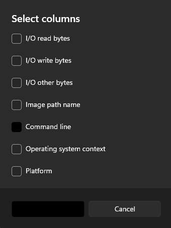
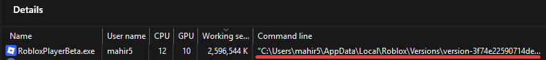
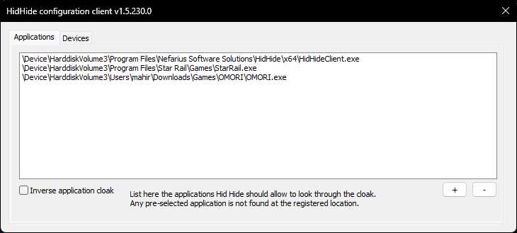
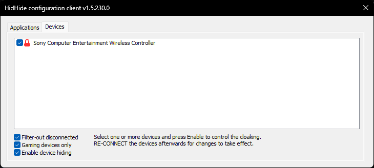

The symptom
Why your controller ends up "driving" inside RDP
Am I affected? You are using a game controller and it is moving your character in RDP when you don't want it to.
Cause: RDP thinks you're trying to use the controller within it, so the input keeps being sent into the remote session.
The fix: Use the HidHide app to hide the controller from other apps, in this case RDP.
Windows delivers game controller input to every application that listens for it, including the Remote Desktop client. HidHide sits between your controller and the apps on your PC and lets you decide which apps can see the device: your games keep full access, while RDP (or whatever else you choose) is cut off from it entirely.
The fix: hide the controller with HidHide
Whitelist your games (or blacklist RDP) so the controller input never reaches the remote session
HidHide is a free, open-source tool from Nefarius Software Solutions. It does not change your controller hardware or firmware; it only blocks which apps can see the device.
-
01
Download and install HidHide
Download and install HidHide from the GitHub releases page. Reboot your PC when prompted.
-
02
Open the HidHide configuration client
After rebooting, open the HidHide configuration client. You can find it by searching for the app in the Windows search bar.
-
03
Choose how you want the cloak to work
By default, HidHide will block all games from seeing your controller, which is the opposite of what you want here. Decide which direction you need:
- By entering any game with the + button on the bottom right corner, they will be added to a whitelist where only the games you select can see and use your controller.
- Alternatively, by toggling Inverse application cloak on the bottom left, HidHide will now allow all games to see your controller, and any game added to the list will be blacklisted from seeing your controller.
Recommendation: If you run many RDPs and play few games with your controller, leave Inverse application cloak unchecked. If you run few RDPs but play many games with your controller, have it checked.
-
04
Add your apps to the list via Task Manager
If you have Inverse application cloak unchecked, you will need to add each game you want to use with a controller to the list. If it is checked, you will need to add each RDP to the list.
Open Task Manager while you have the RDP/games open and go to the Details tab. Right-click on the top row and click Select columns, then enable Command line.

Enable the "Command line" column in Task Manager. A new column will appear which will show the location of your game/RDP. You can then look for the app you want to add to the list, copy its location, and enter it into HidHide.

The Command line column shows the full path of each game/RDP. Copy it and paste it into HidHide. -
05
Hide your controller on the Devices tab
After adding all your RDPs/games to the configuration, switch to the Devices tab.

Switch to the Devices tab once your app list is set up. Plug in your controller and then select it from the list.

Select your controller from the device list. You may also need to toggle Gaming devices only and/or Filter-out disconnected to find your controller. Then toggle Enable device hiding and reconnect your controller.
-
06
Verify HidHide is working
Verify HidHide is working by:
- Using your controller with both an RDP and a game open.
- Checking if you can move around in-game without moving in your RDP.
- If you tried to blacklist your RDPs and it didn't work, you may need to add both the Roblox installation and the RDP itself (
mstsc.exe) to the list.
Still seeing controller input in RDP?
Let us know what you're seeing so we can keep improving these fixes
Credit to BSGH member mahirishere